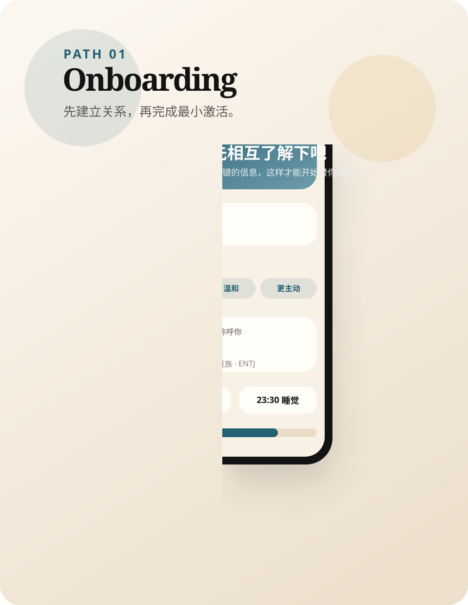
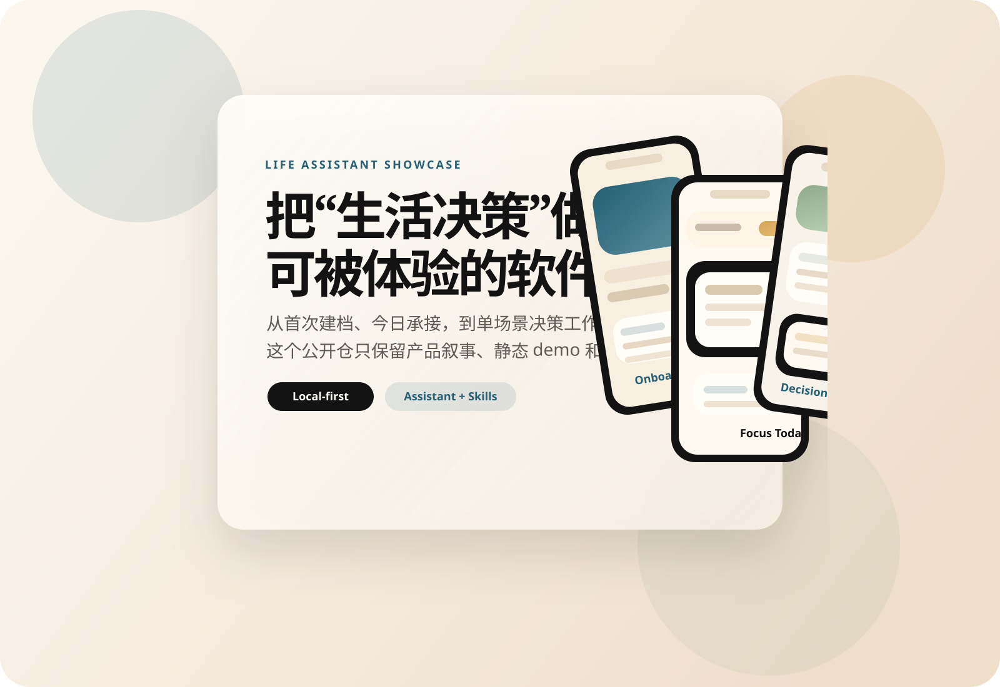
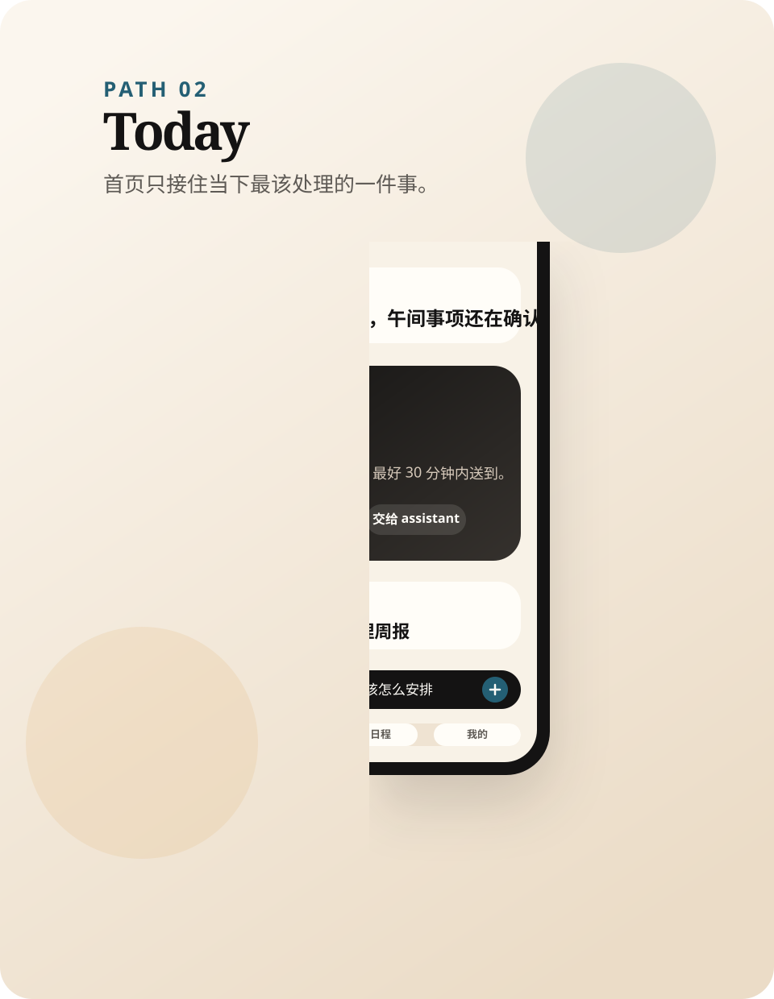
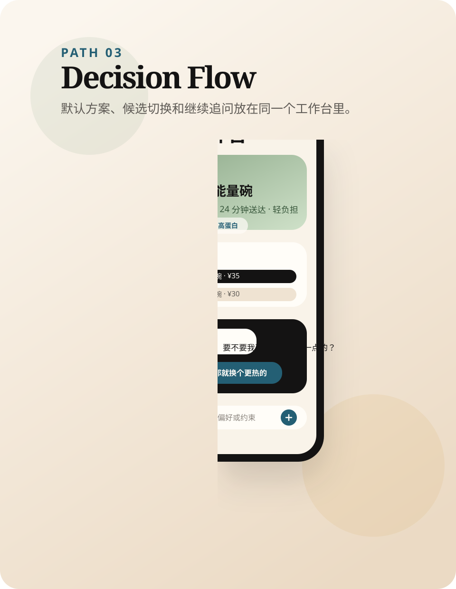
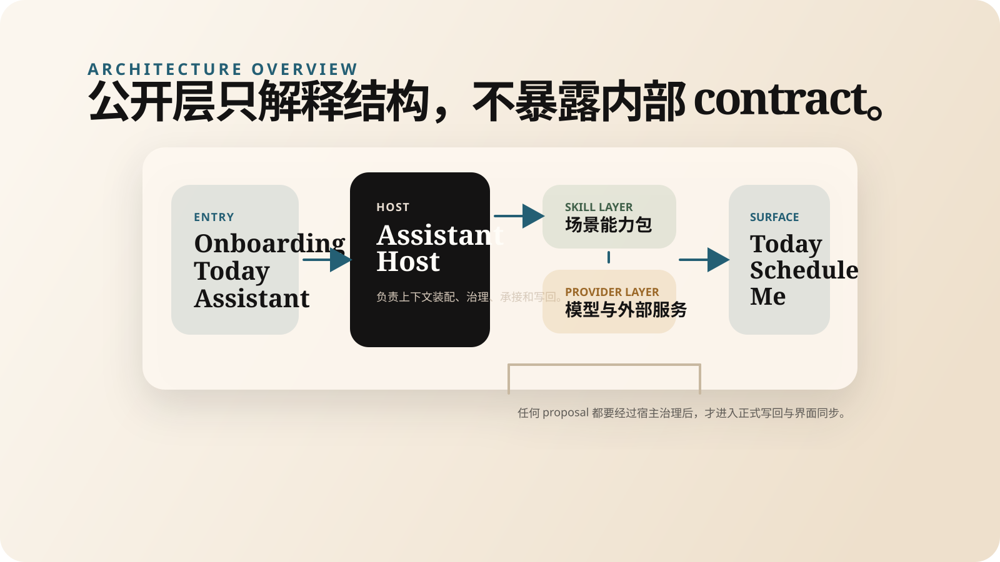

01
Onboarding 先建立关系，再收信息。
首次进入不是一张巨大的配置表，而是一段短路径建档：确认你是谁、你在哪里、你的节奏怎样，以及助理应该用什么方式与你建立关系。
- 最小激活优先，不强求一步收全
- 长期稳定信息先于临时状态
- 模型能力可后置开启

Public showcase repository
它关注的不是一次性回答，而是长期理解、默认判断和自然承接。 当前公开层只保留产品叙事、静态 demo 和高层系统思路。

这不是“把聊天能力塞进 app” 的尝试，而是把 目标、约束、判断、承接和执行边界 做成一个可被解释、可被演示、可逐步扩展的产品原型。
01
首次进入不是一张巨大的配置表，而是一段短路径建档：确认你是谁、你在哪里、你的节奏怎样，以及助理应该用什么方式与你建立关系。

02
“今天”页不追求把所有内容同时展示出来，而是先把当前最值得注意的一件事放到前面，再决定是原地完成、查看详情还是继续交给 assistant。

03
公开 demo 选了午餐工作台作为代表场景：系统先给一份稳妥默认，再允许用户继续问、继续改，而不是把所有复杂度留在一串聊天里。

System structure
对外只保留高层结构：assistant 是宿主，skill 是能力包，proposal 需要经过治理才能进入正式写回。这样做的目的不是复杂化工程，而是让“谁在判断、谁在执行、谁对状态负责”始终清楚。

Repository intent
它保留方向、体验和系统边界，好让项目能够被介绍、被讨论、被进一步验证；而正式实现仍然留在私有主仓继续迭代。